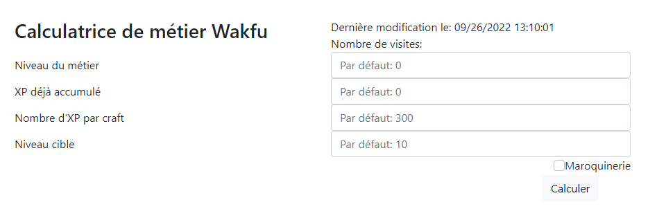

Calculatrice de métiers de craft
Découvrez la calculatrice de métier de fabrication, permettant de connaître le nombre de ressources nécessaires pour les objets grossiers, rudimentaire, etc.
Découvrir
Calculatrice de métiers de récolte (en développement)
Découvrez la calculatrice de métier de récolte, permettant de connaître le nombre de ressources nécessaires pour monter de niveau